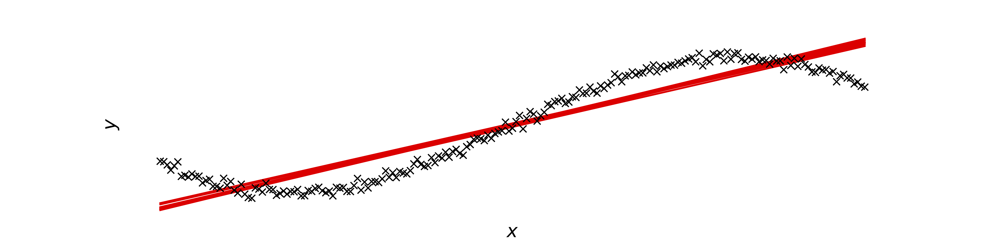
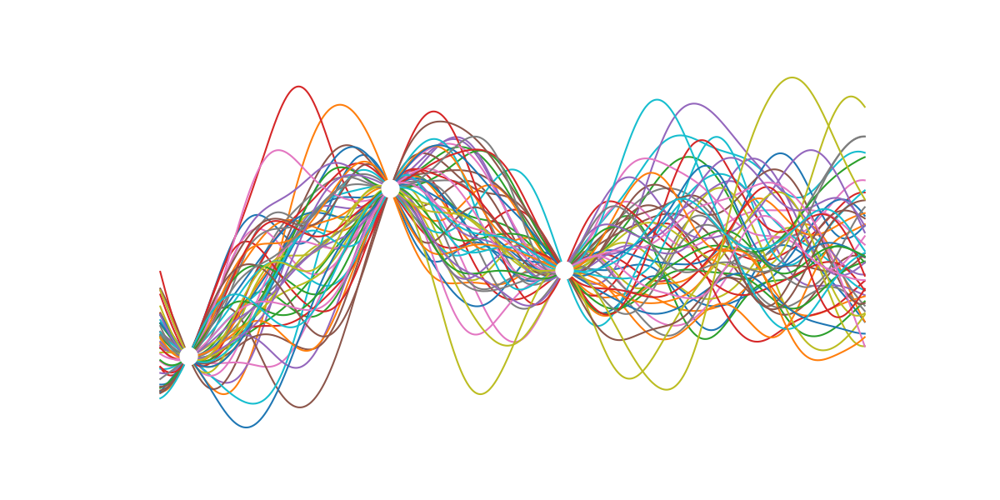

Handling Uncertainty in Learnt Probabilistic Transition Dynamics Models
Aidan Scannell | Carl Henrik Ek | Arthur Richards
5th March 2020
aidan.scannell@bristol.ac.uk
Uncertainty in Machine Learning
Incomplete Coverage of the Domain (Epistemic Uncertainty)
Noise in Data (Aleatoric Uncertainty)

Imperfect Models

Bayesian Machine Learning
- Goal is to infer parameters \(\theta\\\) from data,
- Then make predictions using our learned model.
Predictions vary depending on the type of task (classification, regression, clustering, etc)
Bayes Rule
- Observations \(\mathcal{D} = \{(\mathbf{x}, \mathbf{y})_n\}_{n=1}^N\) (supervised learning),
- Model parameters \(\pmb\theta\),
- We seek the posterior over the parameters,
\[p(\mathbf{\theta}|\mathcal{D}) = \frac{p(\mathcal{D}|\mathbf{\theta})p(\mathbf{\theta})}{p(\mathcal{D})},\]
so that we can make predictions, \[ p(\mathbf{y}_*| \mathbf{x}_*, \mathcal{D}) = \int p(\mathbf{y}_* | \mathbf{x}_*, \theta, \mathcal{D}) p(\theta | \mathcal{D}) \text{d} \theta, \] where \(\mathbf{x}_*\) is a previously unseen test input and \(\mathbf{y}_*\) is its corresponding output value.
This is very cool when you think about it!
Gaussian Processes
Definition: A collection of random variables, any finite number of which have a joint Gaussian distribution.
Gaussian Processes
A Gaussian process is completely specified by its mean function \(m(\mathbf{x})\) and its covariance function \(k(\mathbf{x}, \mathbf{x}')\),
and we can write the Gaussian process as,
\[f(\mathbf{x}) \sim \mathcal{GP}(m(\mathbf{x}), k(\mathbf{x}, \mathbf{x}')).\]
GP Prior

Add Data

Condition GP Prior on Data

GP Posterior
Background
Consider dynamical systems,
- State \(\mathbf{s} \in \R^D\)
- Action \(\mathbf{a} \in \R^F\)
- Time \(t\)
- Transition dynamics \(f\)
where,

Model

Probability Time
- \begin{equation} p(\mathbf{Y} | \mathbf{F}, \pmb{\alpha}) = {\displaystyle ∏_{n=1}^{N}} \mathcal{N} (\mathbf{y}_n|\mathbf{f}_n^{(1)}, ε_1)^{α_n} \mathcal{N} (\mathbf{y}_n|\mathbf{f}_n^{(2)} ε_2)^{1 - α_n}, \end{equation}
- \begin{equation} p(\mathbf{F} | \mathbf{X}) = ∏^K_{k=1} \mathcal{N}(\mathbf{F}^{(k)}|\mathbf{0}, k^{(k)}({\mathbf{X},\mathbf{X}})), \end{equation}
- \begin{equation} p(h | \mathbf{X}) ∼ \mathcal{N}(h | μ_h(\mathbf{X}), k_h(\mathbf{X}, \mathbf{X})) \end{equation}
Variational Approximation
Maths
As seen in \cite{Hensman}, for each GP we introduce a set of pseudo "samples" from the same prior,
The resulting augmented joint probability distribution takes the form,
The variational posteriors of our dynamics \(\mathbf{F}\) and separation manifold \(\mathbf{H}\) take the form,
Our variational posterior takes the factorized form,
Lower Bound
Results
Remember $$\Delta x = f(x, y)$$

\(\Delta x\)

\(f_1\)
\(f_2\)

\(h\)

\(\alpha\)

Ok Great, But Why???
Trajectory Optimisation
Want to find a trajectory (curve) in \(\mathbf{X} \in \R^2\) that,
- Connects two points,
- Minimises distance,
- Avoids high aleatoric uncertainty (turbulence),
- Avoids high epistemic uncertainty (no data),
What?
Let's Use Our Model!
Geodesics
Geodesic: Given two points \(\mathbf{x}_1, \mathbf{x}_2 \in \mathcal{M}\), a Geodesic is a length minimising curve \(\mathbf{c}_g\) connecting the points such that,
How do we Calculate Lengths on Manifolds??
Riemannian Metric
A Riemannian metric \(\mathbf{G}\) on a manifold \(\mathcal{M}\) is a symmetric and positive definite matrix which defines a smoothly varying inner product,
in the tangent space \(T_x\mathcal{M}\), for each point \(x \in \mathcal{M}\) and \(\mathbf{a}, \mathbf{b} \in T_x\mathcal{M}\). The matrix \(\mathbf{G}\) is called the metric tensor.
Let's Imagine a Random Manifold

Let's Visualise Quiver of G(x)
Let's Visualise Contour of Each Dimension G(x)

Lengths on Manifolds
On a Riemannian manidold \(\mathcal{M}\), the length of a curce \(\mathbf{c} : [0, 1] \rightarrow \mathcal{M}\) is given by the norm of the tangent vector (velocity) along the curve,
where \(\mathbf{c}'\) denotes the derivative of \(\mathbf{c}\) and \(\mathbf{G}(\mathbf{c}(\lambda))\) is the metric tensor at \(\mathbf{c}(\lambda)\).
It follows that Geodesics satisfy the following second order ODE,
Which can be expressed as a system of 1st order equations.
Let \(\mathbf{g}(\lambda) = \mathbf{c}'(\lambda)\) and solve for \(\mathbf{c}\) and \(\mathbf{c}'\),
Probabilistic Geodesics
Let's introduce the following Reimannian metric,
where \(\mathbf{J}\) denotes the Jacobian of h,
Quick Maths
- The differential operator is linear so the derivative of a GP is again a GP,
- So the Jacobian and the output are jointly Gaussian,
This means that we can easily obtain the conditional distribution \(p(\mathbf{J} | \mathbf{X}, \mathbf{Y}, \mathbf{x}_*)\),
Suppose we draw \(n\) samples from this \(D-\) dimensional normal distribution to get a matrix \(\mathbf{J}_* \in \R^{D \times n}\). This induces a non-central Wishart distribution over the metric tensor \(\mathbf{G}\),
as the Wishart distribution is the probability dist of the \(D \times D\) random matrix \(\mathbf{G}_* = \mathbf{J}_* \mathbf{J}_*^T\), known as the scatter matrix.
The expected metric tensor is then given by,
The expected metric tensor includes a covariance term \(p \mathbf{\Sigma}_J\) which implies that the metric is larger when the uncertainty in the mapping is higher. This is exactly what we wanted from our metric tensor!
Pretty Plots

Results